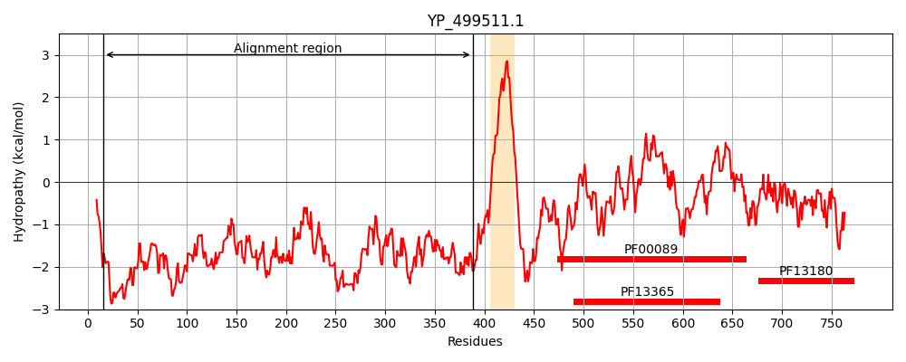
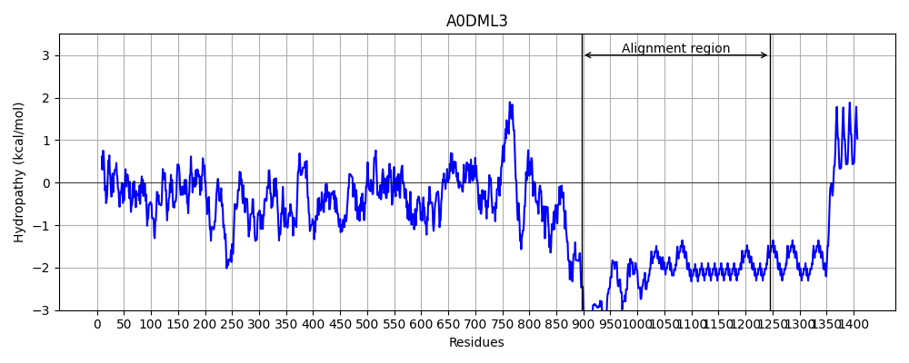
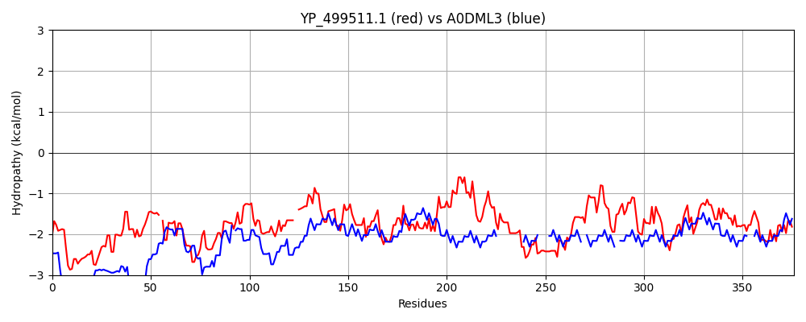

Hit Accession: A0DML3
Hit TCID: 1.C.105.2.5
Hit Description: gnl|BL_ORD_ID|52 gnl|TC-DB|A0DML3|1.C.105.2.5 Chromosome undetermined scaffold_56, whole genome shotgun sequence OS=Paramecium tetraurelia GN=GSPATT00018498001 PE=4 SV=1
Mach Len: 376
e:0.000000
Query TMS Count : 1
Hit TMS Count: 0
TMS-Overlap Score: 0.000000
Predicted Substrates:None
BLAST Alignment:
Score: 182 , Bit scores: 74 bits, E-value: 1.2e-13, Alignment length: 376, Percentage identity: 18
Query: 16 KSQYRRKRREFFHNEDREENLNQHQDKQNIDNTTSKKADKQIHKDSIDKHERFKN-SLSSHLEQRNRDVNENKAEESKSNQDSKSAYNRDHYLTDDVSKKQNSLDSVDQDTEKSKYYEQNSEA--TLSTKSTDKVESTEMRKLSSDKNKVGHEEQHVLSKPSEHDKETRIDSESSRTDSDSSMQTEKIKKDSSDGNKSSNLKSEVISDKSNTVPKLSESDDEVNNQKPLTLPEEQKLKRQQSQNEQTKTYTYGDSEQNDKSNHENDLSHHIPSISDDKDNVMRENHIVDDNPDNDINTPSLSKTDDDRKLDEKIHVEDKHKQNADSSETVGYQSQSTASHRSTEKRNISINDHDKLNGQKTNTKTSANNNQKKATS 388
K + + +++ ++++ N+ Q + +D K K +K H++ KN +L+++ + EN E +K D + N++ ++S+++ +Q + K QN+++ T + + T + +T + + +S + + +Q S + + ++T S + S I + +S + ++N + S + + S+S + N Q Q SQ+ T + +Q +S++ N+ S S + +N + + N +N T S T++ ++ + + + + + S+ +G Q+ +++ + ++ + S N + NGQ+T+ ++ NN Q+ + S
Sbjct: 897 KDENKESKQDKQEQKEKQHQQNKKQQEYEVDGNEKNKNKKDQNKSKQYNHDQTKNQNLTNYNDLEKVYKKENSNENNKKGYDYRQNMNKNSQ-AQEISEEKIEQKQQEQQLQTKKTNNQNTQSSNTNNGQQTSQSSNTNVGQQTSQSSNTNNGQQTSQSSSTNNGQQTSQSSNTKNGQQTSQSSNTYIGQQTSQSSNTNNGQQTSQSSNTKNGQQTSQSSNTNNGQ-------------QTSQSSNT-----NNGQQTSQSSNTNNGQQ--TSQSSNTNNGQQTSQ--SSNTNNGQQTSQSSNTNNGQQTSQSSNTNNGQQTSQSSNTNIGQQTSQSSNTNNGQQTSQSSNTN---NGQQTSQSSNTNNGQQTSQS 1246 | Protein Hydropathy Plots: |
|---|
|  |  |
Pairwise Alignment-Hydropathy Plot:
|
|---|
|  |